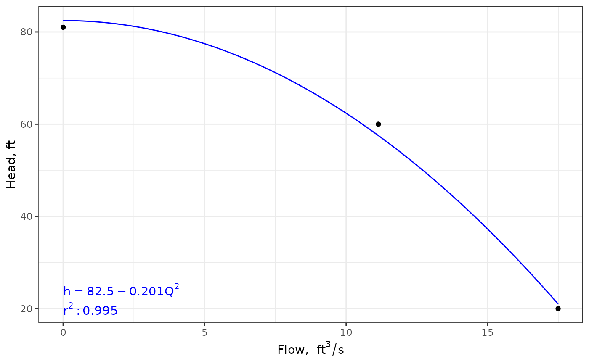

Fits a polynomial curve to three or more points from a pump characteristic curve to be used in solving for an operating point of the pump in a piping system.
Source:R/pumpcurve.R
pumpcurve.RdFits a polynomial curve to three or more points from a pump characteristic curve. This allows solving for an operating point of the pump in a piping system. A portion of this is based on https://github.com/PhDMeiwp/basicTrendline/blob/master/R/trendline.R
Usage
pumpcurve(Q = NULL, h = NULL, eq = "poly1", units = c("SI", "Eng"))Arguments
- Q
Numeric vector of flow rates for selected points on the pump curve [\(m^3 s^{-1}\) or \(ft^3 s^{-1}\)]
- h
Numeric vector of heads for selected points on the pump curve [\(m\) or \(ft\)]
- eq
Character vector identifying the for of equation to fit (see details)
- units
character vector that contains the system of units [options are
SIfor International System of Units andEngfor English (US customary) units.
Value
Returns an object of class pumpcurve consisting of a list including:
curve - a function defining the curve that is fit to the data
eqn - a character vector of the equation for the curve
r2 - the coefficient of determination for the curve fit, \(R^2\)
p - a plot object of the fit curve
units - the units system passed to the function
Details
The form of the equation fit to the input points may be one of the
following, as determined by the eq input parameter.
| eq | equation form |
| poly1 | \(h = a + {b}{Q} + {c}{Q}^2\) |
| poly2 | \(h = a + {c}{Q}^2\) |
| poly3 | \(h = h_{shutoff} + {c}{Q}^2\) |
where \(h_{shutoff}\) is the head on the pump curve associated with
\(Q=0\). The shutoff head at \(Q=0\) should be included in the input
vectors if the poly3 equation form is to be used.
Examples
#Input in Eng units - use \code{units} package for easy unit conversion
qgpm <- units::set_units(c(0, 5000, 7850), gallons/minute)
qcfs <- units::set_units(qgpm, ft^3/s)
hft <- c(81, 60, 20) #units are already in ft so setting units is optional
pumpcurve(Q = qcfs, h = hft, eq = "poly2", units = "Eng")
#> $curve
#> function (x)
#> coef(hqfit)[1] + x^2 * coef(hqfit)[2]
#> <bytecode: 0x555dbe8bde28>
#> <environment: 0x555dbe8c02f8>
#>
#> $eqn
#> [1] "h == 82.5 - 0.201*Q^2"
#>
#> $r2
#> [1] 0.995
#>
#> $p

#>
#> $units
#> [1] "Eng"
#>
#> attr(,"class")
#> [1] "pumpcurve"